Техника высоких напряжений
Конспект лекции
Лекция 2. Ионизация газа, электронная лавина, условие самостоятельности разряда
Как сильное поле превращает газ в проводник · материал для студентов
О чём лекция. В лекции 1 мы научились находить, где поле сильное. Теперь — как сильное поле превращает непроводящий газ в проводник: откуда в газе свободные заряды, как электрон размножается лавиной и при каком условии разряд поддерживает себя сам. Эта физика понадобится в лекциях о стримере, короне, законе Пашена и частичных разрядах. Интерактив. «Ионизация и лавина» на сайте курса: вкладки 1–4 повторяют разделы конспекта, вкладка 5 — задачи, вкладка 6 — тест. Задачи с разбором — в пособии студента к лекции 2. |
После лекции вы сможете:
назвать виды объёмной ионизации и эмиссии и записать условие каждого;
оценить энергию, которую электрон набирает на длине свободного пробега, и сравнить её с энергией ионизации;
объяснить смысл коэффициентов α, η и γ и рассчитать α по формуле Таунсенда;
рассчитать число электронов и ионов в лавине, объяснить, почему почти все ионы лежат у головки;
записать и применить условие самостоятельности разряда, получить из него закон Пашена;
объяснить, как давление, высота, влажность и газ меняют электрическую прочность промежутка.
1. Обозначения и сокращения
| Обозначение | Смысл | Единица |
|---|---|---|
| e | элементарный заряд, 1,602·10−19 Кл | Кл |
| E | напряжённость электрического поля | В/см, кВ/см |
| U, Uпр | напряжение; пробивное напряжение промежутка | кВ |
| S | длина разрядного промежутка (катод — анод) | см |
| p | давление газа | мм рт. ст. (Торр) |
| E/p | приведённая напряжённость — параметр подобия | В/(см·мм рт. ст.) |
| λ | средняя длина свободного пробега | мкм, см |
| Z | число соударений на единице пути, λ = 1/Z | 1/см |
| Wи, Wв | энергия ионизации, энергия возбуждения | эВ |
| Wвых | работа выхода электрона из металла | эВ |
| ψ | степень ионизации n/N | — |
| α | коэффициент ударной ионизации — ионизаций на 1 см пути электрона | 1/см |
| η | коэффициент прилипания — захватов на 1 см пути | 1/см |
| γ | коэффициент вторичной эмиссии — электронов с катода на один ион лавины | — |
| A, B | константы формулы Таунсенда для газа | 1/(см·мм рт. ст.), В/(см·мм рт. ст.) |
| n, n0 | число электронов в лавине; начальное число | — |
| N+, N− | положительные и отрицательные ионы лавины | — |
| μ | число вторичных электронов от одной лавины | — |
| I, I0 | ток в цепи промежутка; ток внешнего ионизатора | А, пА |
| r | радиус головки лавины | мм |
| Eq | поле заряда головки лавины | кВ/см |
| ve, vи | скорость дрейфа электронов, ионов | см/с |
| h·ν | энергия фотона | эВ |
| δ | относительная плотность воздуха | — |
| H | высота над уровнем моря | м |
| Сокращение | Расшифровка |
|---|---|
| КРУ, КРУЭ | комплектное распределительное устройство; КРУ элегазовое |
| ВЛ, ПС, ОРУ | воздушная линия; подстанция; открытое распределительное устройство |
| УФ | ультрафиолетовое излучение |
| SF₆ | элегаз — гексафторид серы |
| ВДК | вакуумная дугогасительная камера |
| ЧР | частичный разряд (лекция 10) |
| эВ | электронвольт: 1 эВ = 1,602·10−19 Дж — энергия, которую заряд e набирает, пройдя разность потенциалов 1 В |
2. Возбуждение, ионизация, рекомбинация
2.1. Энергетические уровни
Потенциальная энергия атома минимальна, когда электроны находятся на ближайших к ядру орбитах. Переход электрона на более удалённую орбиту — возбуждение; энергию Wв атом получает при ударе или при поглощении фотона. Время жизни возбуждённого состояния обычно порядка 10−8 с (у метастабильных уровней — много больше); возвращаясь, атом излучает фотон. Если электрону передана энергия не меньше энергии ионизации Wи, он отрывается: рождаются две свободные частицы — электрон и положительный ион.
| Газ | Возбуждение Wв, эВ | Ионизация Wи, эВ | Диссоциация, эВ |
|---|---|---|---|
| N₂ | 6,1 | 15,5 | 9,77 |
| N | 6,3 | 14,5 | — |
| O₂ | 7,9 | 12,5 | 5,17 |
| O | 9,1 | 13,6 | — |
| H₂O | 7,6 | 12,7 | — |
| Ar | 11,5 | 15,8 | — |
| SF₆ | — | 15,6 | — |
Таблица 1. Минимальные энергии возбуждения, ионизации и диссоциации (табл. 1.1 и 1.2 учебника; Ar и SF₆ — справочные значения).
Удобно помнить: 1 эВ — энергия, которую электрон получает, пройдя разность потенциалов 1 В. Поэтому если напряжённость выражена в В/м, а путь в метрах, их произведение сразу даёт энергию в электронвольтах.
2.2. Рекомбинация и степень ионизации
Обратный процесс — рекомбинация: электрон и ион объединяются в нейтральную частицу, избыток энергии уносит фотон. Ионизация и рекомбинация вместе устанавливают равновесие, которое характеризует степень ионизации:
(1)
где n — концентрация ионизированных частиц, N — общая концентрация. Газ, в котором значительная часть частиц ионизирована, — плазма; концентрации положительных и отрицательных зарядов в ней примерно равны (канал искры, дуги, лидера).
2.3. Электроотрицательные и электроположительные газы
Молекулы кислорода, паров воды, хлора, элегаза SF₆ способны захватить электрон и стать отрицательным ионом — это прилипание. Такие газы называют электроотрицательными. Отрицательный ион тяжёл и не ионизует, поэтому прилипание убирает электроны из размножения. Азот, инертные газы, водород — электроположительные, прилипания в них практически нет. Именно сильное прилипание делает элегаз примерно в 2,5–3 раза прочнее воздуха при том же давлении.
3. Длина свободного пробега и энергия электрона
Если на единице пути частица испытывает Z соударений, средняя длина свободного пробега
(2)
Число соударений пропорционально концентрации молекул, т. е. давлению при постоянной температуре, поэтому λ обратно пропорциональна давлению и прямо пропорциональна абсолютной температуре:
(3)
В модели Таунсенда длина пробега электрона связана с константой A газа: λ = 1/(A·p). Для воздуха при 760 мм рт. ст. это 1/(15·760) см ≈ 0,88 мкм. Эту оценку использует интерактив и задачи.
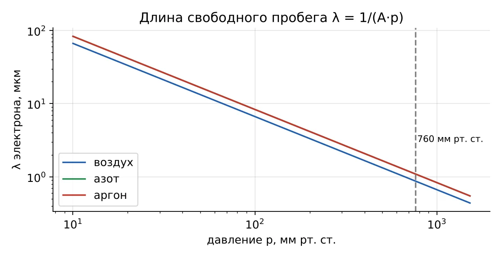
Рис. 1. Длина свободного пробега электрона в воздухе, азоте и аргоне в зависимости от давления
Под действием поля электрон на пути λ набирает энергию
(4)
Для воздуха при 30 кВ/см: W = 3·106 В/м · 0,88·10−6 м ≈ 2,6 эВ — в 5 раз меньше энергии ионизации кислорода. Значит, при «рабочих» напряжённостях ионизует не средний электрон, а редкий, пролетевший без удара путь в несколько раз длиннее среднего. Отсюда вероятностный характер ионизации и всего пробоя.
3.1. Почему ионизуют электроны, а не ионы
Ион тоже ускоряется полем, но он сталкивается с молекулами той же массы и в упругом ударе отдаёт им значительную часть энергии — накопить энергию ионизации ион не успевает. Электрон в тысячи раз легче: в упругом ударе он теряет лишь малую долю энергии (порядка 2me/M ≈ 10−4) и копит её от пробега к пробегу. Кроме того, подвижность электронов примерно в 100 раз больше ионной. Поэтому основной механизм размножения зарядов в газе — ударная ионизация электронами.
4. Виды объёмной ионизации
4.1. Ударная ионизация
Условие (формулы 1.5–1.6 учебника): кинетическая энергия, набранная электроном в поле, не меньше энергии ионизации молекулы:
(5)
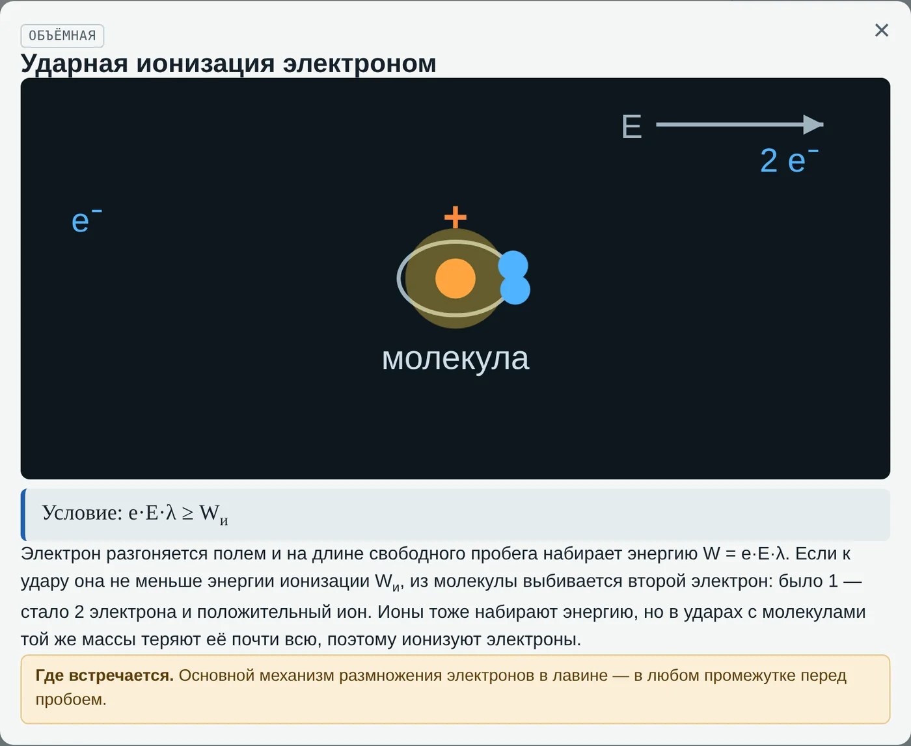
Рис. 2. Мнемосхема «Ударная ионизация электроном» в интерактиве (вкладка 1): электрон, разогнанный полем, выбивает второй электрон, молекула становится положительным ионом
4.2. Вероятность ионизации и вывод коэффициента α
Длины пробегов распределены экспоненциально: доля электронов, пролетевших без удара путь не меньше x,
(6)
Чтобы ионизовать, электрон должен пролететь без удара путь xи = Wи/(eE). В простейшей модели Таунсенда электрон при каждом ударе теряет всю энергию; тогда доля ионизирующих ударов
(7)
а так как на 1 см пути электрон испытывает 1/λ ударов, число ионизаций на 1 см
(8)
Подставив λ = 1/(A·p) и обозначив B = A·Wи эфф, получим эмпирическую формулу Таунсенда:
(9)
Главный вывод: α/p зависит только от E/p. Приведённая напряжённость E/p — параметр подобия: два промежутка с одинаковыми E/p и p·S ведут себя одинаково (это ключ к закону Пашена, лекция 4).
| Газ | A, 1/(см·мм рт. ст.) | B, В/(см·мм рт. ст.) | Диапазон E/p |
|---|---|---|---|
| Воздух | 15 | 365 | 100–800 |
| Азот N₂ | 12 | 342 | 100–600 |
| Аргон Ar | 12 | 180 | 100–600 |
| CO₂ | 20 | 466 | 500–1000 |
| Водород H₂ | 5 | 130 | 150–600 |
Таблица 2. Константы формулы Таунсенда (справочные данные физики газового разряда). Вне указанного диапазона формула даёт лишь оценку: при атмосферном давлении и E/p ≈ 40 погрешность порядка 10–15 %.
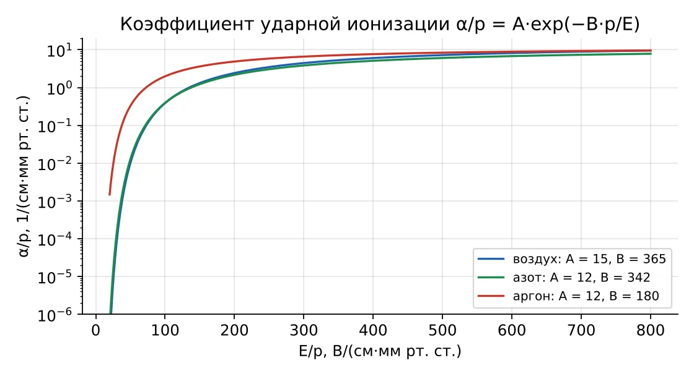
Рис. 3. Зависимость α/p от E/p для воздуха, азота и аргона
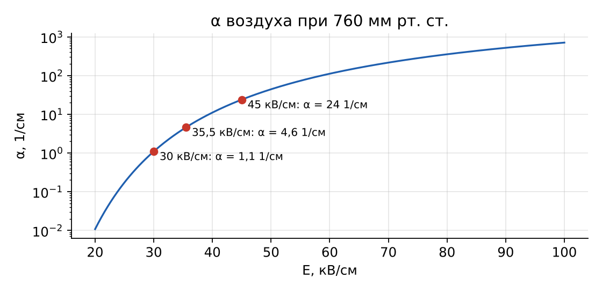
Рис. 4. Коэффициент α воздуха при нормальном давлении: при 30 кВ/см α ≈ 1, при 45 кВ/см — уже 24 ионизации на сантиметр
| Эффективная энергия ионизации. Для воздуха B/A = 365/15 ≈ 24 эВ — почти вдвое больше табличных 12,5 эВ. Это не ошибка: на пути к ионизации электрон тратит энергию на возбуждение, колебания молекул, упругие удары. В интерактиве (вкладка 2) на графике показаны обе линии, и счёт ионизаций ведётся по эффективной — тогда «α по счёту» совпадает с формулой Таунсенда. |
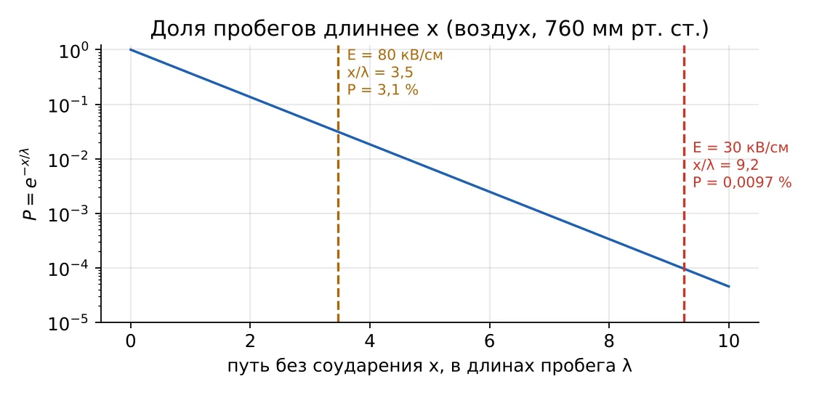
Рис. 5. Доля пробегов длиннее x: при 30 кВ/см ионизует лишь ≈ 0,01 % ударов, при 80 кВ/см — ≈ 3 %
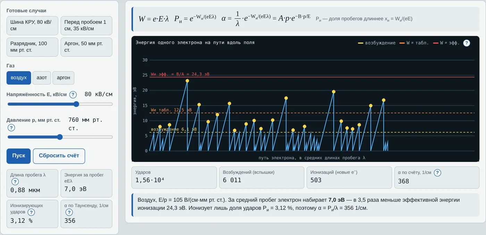
Рис. 6. Вкладка 2 «Энергия электрона»: «пила» энергии одного электрона, жёлтые точки — возбуждения, красные — ионизации
4.3. Ступенчатая ионизация
Первый удар лишь возбуждает атом. Если за время жизни возбуждения (≈ 10−8 с) придёт второй удар или фотон, суммарной энергии хватит на ионизацию:
(10)
Значима там, где много возбуждённых частиц и часты удары: в канале искры и дуги, в тлеющем разряде.
4.4. Фотоионизация
Фотон ионизует, если его энергия не меньше энергии ионизации:
(11)
| Мишень | Порог, эВ | Наибольшая длина волны |
|---|---|---|
| O₂ (ионизация) | 12,5 | 99 нм — вакуумный ультрафиолет |
| N₂ (ионизация) | 15,5 | 80 нм |
| Медь, сталь (фотоэмиссия) | ≈ 4,5 | ≈ 276 нм — ближний ультрафиолет |
Источник фотонов — возбуждённые молекулы самой лавины. Вакуумный ультрафиолет поглощается в воздухе на долях миллиметра, поэтому фотоионизация рождает новые электроны прямо перед лавиной — это основа стримерного механизма (лекция 3).
4.5. Термоионизация
При температуре 5000–20 000 К молекулы движутся так быстро, что ионизуют друг друга при столкновениях; ионизуют и тепловые фотоны. Сначала молекулы диссоциируют (O₂ — 5,17 эВ, N₂ — 9,77 эВ), затем ионизуются атомы. Термоионизация поддерживает канал искры, лидера и дуги — в том числе дугу в выключателе.
5. Эмиссия электронов с катода
Энергия, нужная для выхода электрона из металла, — работа выхода Wвых — в 2–10 раз меньше энергии ионизации газа; для меди и стали в воздухе ≈ 4,5 эВ. Поэтому катод — важный «поставщик» электронов.
| Вид эмиссии | Условие | Где встречается |
|---|---|---|
| Вторичная (ударом иона) | Ионы лавины бьют в катод — механизм коэффициента γ | |
| Фотоэмиссия | УФ-подсветка разрядника; фотоны лавины на катоде | |
| Термоэлектронная | Пятно дуги на контакте, катоды ламп | |
| Автоэлектронная (полевая) | E у поверхности ≈ 107–108 В/см | Микроострия в вакуумной камере выключателя |
Совокупность вторичных процессов на катоде (ударами ионов и фотонами) характеризуют коэффициентом вторичной эмиссии γ — числом эффективных электронов на один положительный ион лавины. Всегда γ ≪ 1, обычно 10−4…10−1; он зависит от материала и состояния поверхности катода, газа и давления. В интерактиве и задачах по умолчанию γ = 0,01.
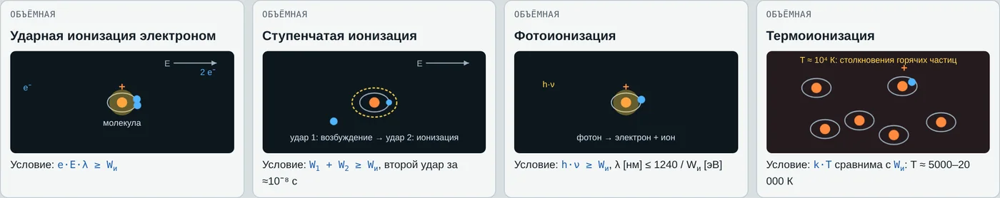
Рис. 7. Вкладка 1: мнемосхемы объёмной ионизации, эмиссии и обратных процессов
6. Прилипание электронов
Число захватов электрона на 1 см пути — коэффициент прилипания η. В лавине размножение определяет разность α − η: если она отрицательна, лавина затухает. Для воздуха при нормальных условиях α и η сравниваются при E ≈ 24–26 кВ/см (критическая напряжённость: ниже неё лавина в однородном поле не растёт). Влажность повышает прилипание (пары воды электроотрицательны); элегаз SF₆ — газ с очень сильным прилипанием, поэтому он применяется в КРУЭ и выключателях.
7. Электронная лавина
7.1. Число электронов
Пусть с катода под действием внешнего ионизатора вышли n0 электронов, и на расстоянии x от катода их стало n. На пути dx каждый электрон производит α·dx ионизаций, поэтому прирост (формулы 1.7–1.9 учебника)
(12)
В однородном поле α = const, и
(13)
С прилипанием часть электронов выбывает: на пути dx захватывается η·n·dx электронов, и (формула 1.11)
(14)
Рост экспоненциальный: на каждом отрезке 1/(α − η) число электронов увеличивается в e ≈ 2,72 раза. При α = 10 1/см на 1,5 см из одного электрона получается e15 ≈ 3,3 млн.
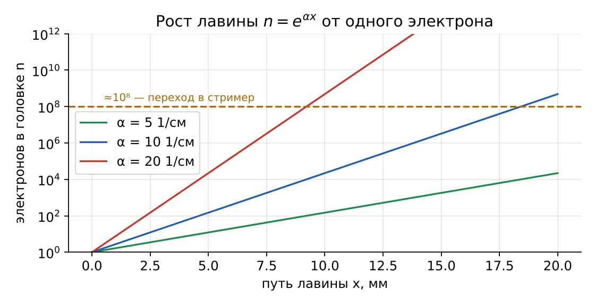
Рис. 8. Рост числа электронов в лавине при разных α; пунктир — порог ≈ 10⁸, после которого лавина превращается в стример
7.2. Ионы лавины и их распределение
Каждая ионизация оставляет положительный ион там, где она произошла. Число положительных ионов к моменту, когда головка прошла путь x:
(15)
Без прилипания N+ = n − n0: ионов на n0 меньше, чем электронов (формула 1.12). Плотность ионов вдоль пути растёт как eαx, поэтому:
центр тяжести ионов отстоит от головки примерно на 1/(α − η);
в последнем отрезке длиной 1/(α − η) у головки лежит 1 − 1/e ≈ 63 % всех ионов;
в задней половине лавины ионов в e(α−η)x/2 раз меньше, чем всего: при αx = 15 — всего 0,055 %.
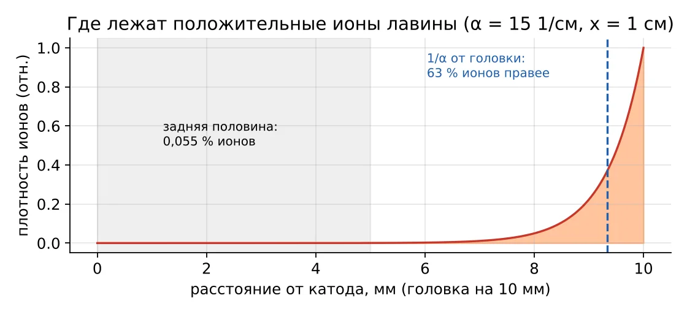
Рис. 9. Распределение положительных ионов вдоль пути лавины: почти все ионы рождаются у головки
Электроны примерно в 100 раз подвижнее ионов, поэтому за время пробега лавины ионы практически неподвижны и образуют «хвост», а электроны — «головку» на фронте. Лавина имеет форму капли, обращённой хвостом к катоду. Положительный объёмный заряд искажает внешнее поле: впереди головки поле усилено, в хвосте ослаблено.
7.3. Размер головки, её поле и переход в стример
Головка расплывается из-за диффузии электронов. За время t = x/ve её радиус
(16)
где D/μ — отношение коэффициента диффузии к подвижности (характерная энергия электронов, для воздуха порядка 1 В). Заряд головки e·n создаёт на её границе поле
(17)
Пока Eq ≪ E, лавина не замечает собственного заряда. Когда Eq сравнивается с внешним полем, начинается интенсивная фотоионизация перед головкой, и лавина превращается в стример. Расчёт даёт это при αx ≈ 18–20, т. е. при n ≈ 108–109 — критерий перехода из учебника (раздел 1.1.4). Длина пути, на которой это происходит, — критическая длина лавины xкр. Если xкр < S, разряд развивается в стримерной форме (лекция 3).
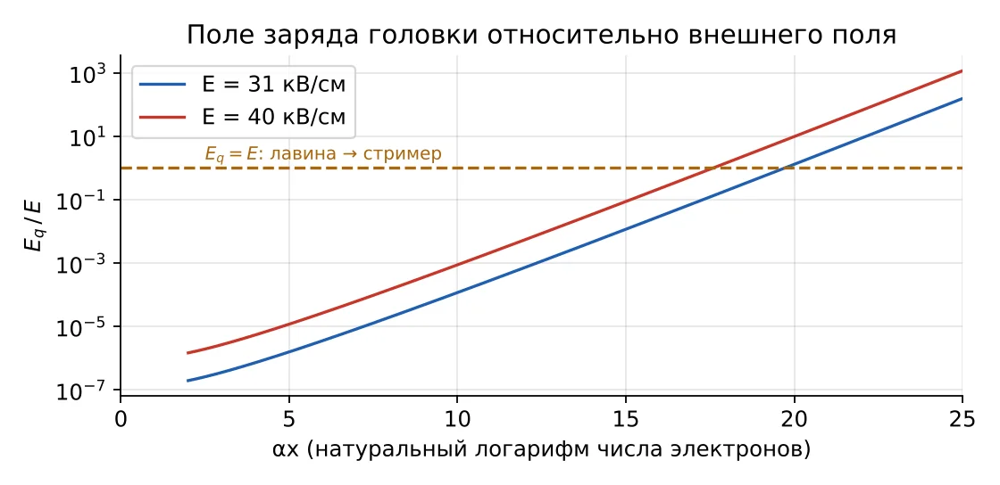
Рис. 10. Отношение поля головки к внешнему полю растёт экспоненциально и пересекает единицу при αx ≈ 17–20
7.4. Скорость и время
Скорость дрейфа электронов в воздухе при E/p ≈ 40 В/(см·мм рт. ст.) — порядка 107 см/с (в модели интерактива ve ≈ 3,2·105·(E/p) см/с). Подвижность ионов μи ≈ 2 см²/(В·с) при нормальном давлении, т. е. ионы примерно в 100 раз медленнее. Лавина пересекает сантиметровый промежуток за десятки наносекунд, а ионы уходят к катоду за микросекунды.
| Величина (воздух, 42 кВ/см, 760 мм рт. ст., x = 12 мм) | Значение в интерактиве |
|---|---|
| α, 1/см | 15,4 |
| αx | 18,5 |
| Электронов в головке | 1,11·108 |
| Положительных ионов | 1,11·108 |
| Ионов в последних 1/α | 6,99·107 (63 %) |
| Ионов в задней половине | 1,05·104 (< 0,01 %) |
| Центр ионов позади головки | 0,65 мм |
| Радиус головки | 0,107 мм |
| Поле головки | 139 кВ/см > 42 кВ/см — стример |
| Критическая длина лавины | 11,2 мм |
| Время пробега | 68 нс; ионы за это время сдвинулись на 57 мкм |
Таблица 3. Лавина при настройках интерактива по умолчанию (вкладка 3).
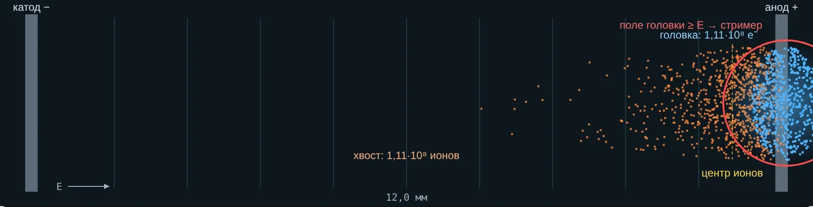
Рис. 11. Вкладка 3: лавина-капля в промежутке; электроны — синие, положительные ионы — оранжевые, жёлтая линия — центр ионов
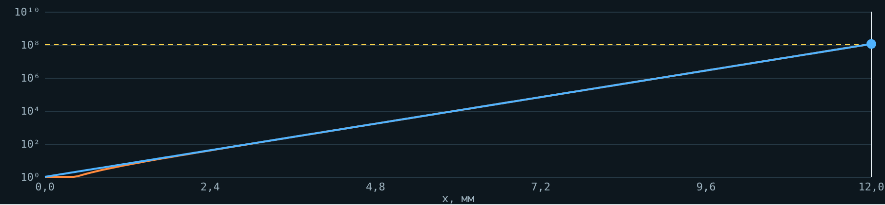
Рис. 12. Вкладка 3: рост lg n по пути и порог 10⁸
8. Несамостоятельный и самостоятельный разряд
8.1. Определения
После прохождения первичной лавины процесс может возобновиться или затухнуть. Для возобновления нужен хотя бы один эффективный вторичный электрон — способный дать новую лавину. Если такой электрон даёт только внешний ионизатор (ультрафиолет, радиоактивный фон, рентген), разряд несамостоятельный: убрали ионизатор — разряд погас. Если вторичный электрон рождается самой лавиной, разряд самостоятельный. Два механизма возобновления: 1) фотоны от возбуждённых молекул лавины вызывают фотоионизацию в газе и фотоэмиссию с катода; 2) положительные ионы лавины, приходя к катоду, выбивают электроны (вторичная эмиссия).
8.2. Вывод условия самостоятельности
Один электрон с катода даёт у анода e(α−η)S электронов и оставляет в промежутке
(18)
положительных ионов (формула 1.12). Каждый ион, придя к катоду, выбивает в среднем γ эффективных электронов. Число вторичных электронов от одной лавины
(19)
Каждый вторичный электрон даёт новую лавину, т. е. поколения образуют геометрическую прогрессию 1, μ, μ², μ³, … При μ < 1 поколения затухают, при μ ≥ 1 — не затухают или растут. Условие самостоятельности разряда (формула 1.13 учебника):
(20)
При γ = 0,01 нужно (α − η)S ≥ ln 101 = 4,62, т. е. лавина из ~100 электронов. Чем больше γ, тем меньше нужное αS и ниже пробивное напряжение.
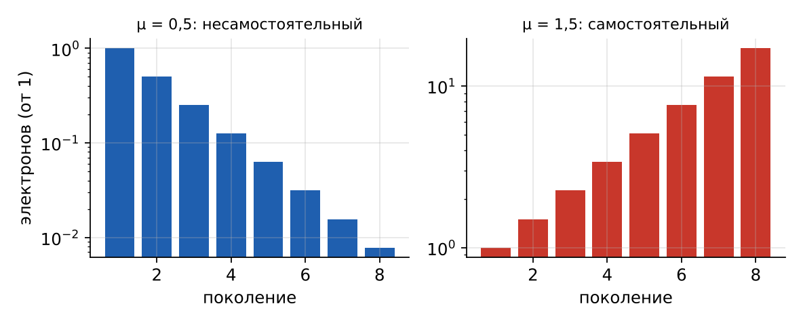
Рис. 13. Поколения лавин от одного электрона: при μ = 0,5 цепочка затухает, при μ = 1,5 — растёт
8.3. Ток в промежутке (опыт Таунсенда)
Схема опыта: плоский промежуток в газе подключён к источнику через резистор, последовательно включён чувствительный прибор; катод освещён ультрафиолетом, создающим фототок I0. Суммируя прогрессию поколений, получаем ток, который показывает прибор:
(21)
Участки зависимости I(U) при плавном подъёме напряжения:
I — ток насыщения: собираются все фотоэлектроны, I ≈ I0; ионизации ещё нет. (Ещё раньше — начальный участок, где растёт доля собранных зарядов; в интерактиве не показан.)
II — ударная ионизация: I ≈ I0·eαS, ток растёт по экспоненте.
III — вторичная эмиссия: знаменатель 1 − μ уменьшается, ток растёт быстрее экспоненты.
IV — пробой: при μ → 1 знаменатель стремится к нулю, ток неограниченно растёт — разряд самостоятельный, ограничить ток может только внешняя цепь.
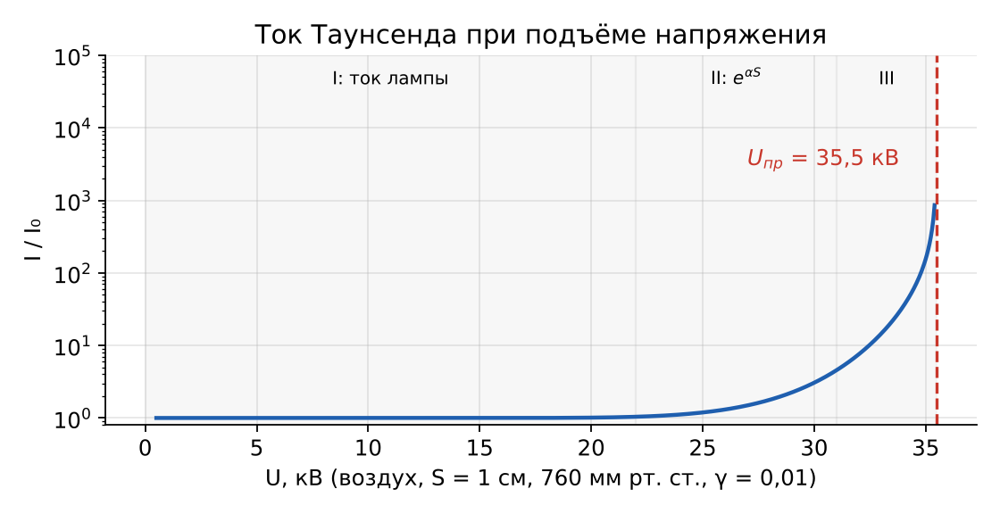
Рис. 14. Зависимость тока от напряжения для воздушного промежутка 1 см; Uпр = 35,5 кВ
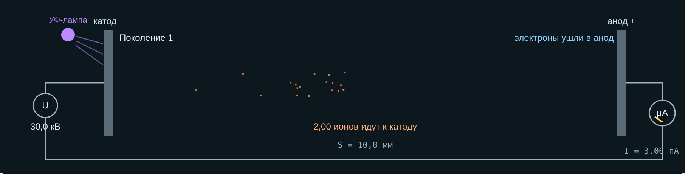
Рис. 15. Вкладка 4: схема опыта Таунсенда — УФ-лампа, источник U, промежуток, микроамперметр; анимация судьбы одного электрона
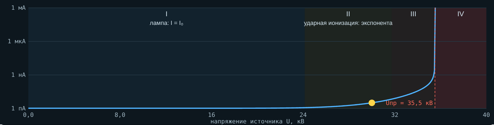
Рис. 16. Вкладка 4: показания прибора при подъёме U с выделенными участками I–IV
9. Закон Пашена как следствие условия самостоятельности
В однородном поле E = U/S. Подставим формулу Таунсенда в условие самостоятельности αS = ln(1 + 1/γ) (без прилипания):
(22)
Пробивное напряжение зависит только от произведения p·S. Кривая имеет минимум. Приравняв производную к нулю, получим
(23)
Для воздуха при γ = 0,01: (p·S)min = 0,84 мм рт. ст.·см, Umin ≈ 305 В (опыт даёт около 330 В). Ниже этого напряжения воздушный промежуток не пробивается ни при каком p·S.
Правая ветвь (большие p·S, атмосферные промежутки): пробег короток, электрон набирает мало энергии — нужно сильное поле. Левая ветвь (малые p·S, разреженный газ или микрозазор): электронов-ударов на пути слишком мало, лавина не успевает размножиться — снова нужно большое напряжение. На этом основана вакуумная изоляция.
| S, см (760 мм рт. ст.) | p·S, мм рт. ст.·см | Uпр, кВ | Eпр = U/S, кВ/см |
|---|---|---|---|
| 0,1 | 76 | 5,0 | 50,3 |
| 0,5 | 380 | 19,5 | 39,0 |
| 1,0 | 760 | 35,5 | 35,5 |
| 2,0 | 1520 | 65,2 | 32,6 |
| 3,0 | 2280 | 93,4 | 31,1 |
Таблица 4. Пробивное напряжение однородного воздушного промежутка по формуле Пашена (A = 15, B = 365, γ = 0,01). Видно падение пробивной напряжённости с ростом S.
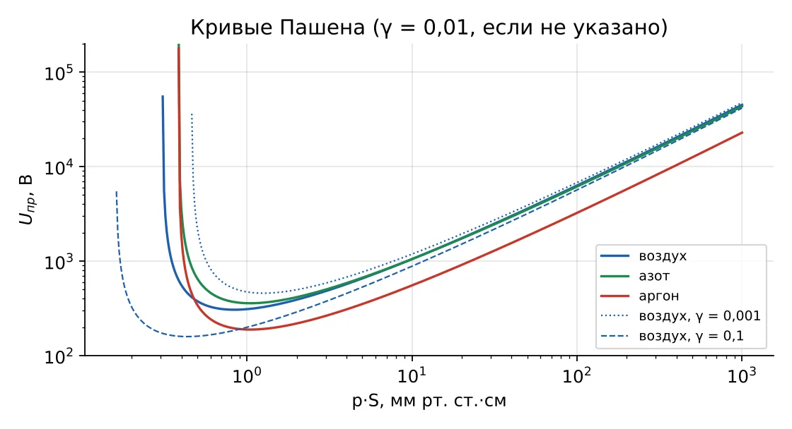
Рис. 17. Кривые Пашена для воздуха, азота и аргона и влияние γ
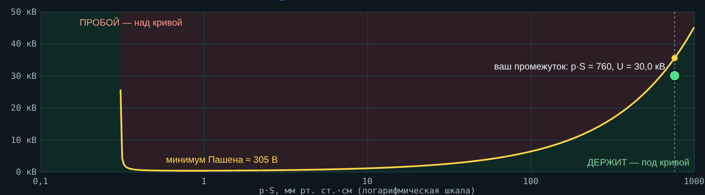
Рис. 18. Вкладка 4: кривая Пашена с зонами «пробой» и «держит»; точка — промежуток студента при текущем U
10. Как внешние условия меняют прочность промежутка
| Фактор | Что меняется в физике | Практическое следствие |
|---|---|---|
| Давление ↓ (высота, утечка газа) | λ растёт, электрон набирает больше энергии; на правой ветви Пашена Uпр падает почти пропорционально p | Поправка изоляции на высоту; блокировка элегазовых аппаратов при падении давления |
| Давление ↑ | λ меньше, нужна большая E | Сжатый газ — изоляция КРУЭ; но при очень малых зазорах — левая ветвь |
| Температура ↑ | Плотность газа ↓, как при снижении давления | Нормы приводят к нормальным условиям через относительную плотность δ |
| Влажность | Пары воды электроотрицательны (η ↑); но конденсат на поверхностях резко снижает поверхностную прочность | Влажность учитывают отдельной поправкой; конденсат в КРУ — частая причина перекрытий |
| Газ | Другие A, B и η | SF₆ в 2,5–3 раза прочнее воздуха; аргон пробивается легче |
| Материал катода, облучение | γ и наличие начальных электронов | УФ-подсветка уменьшает разброс пробивного напряжения разрядников |
Плотность воздуха с высотой в нормах координации изоляции (МЭК 60071-2) оценивают как δ = e−H/8150, H — высота в метрах; требуемую прочность изоляции умножают на поправочный коэффициент Ka = em·H/8150, где показатель m зависит от вида воздействия и конфигурации изоляции (обычно 0,5–1).
| H, м | δ | p, мм рт. ст. | Uпр 1 см по Пашену, кВ |
|---|---|---|---|
| 0 | 1,00 | 760 | 35,5 |
| 1000 | 0,88 | 672 | 31,9 |
| 2000 | 0,78 | 595 | 28,7 |
| 3000 | 0,69 | 526 | 25,8 |
| 4000 | 0,61 | 465 | 23,2 |
Таблица 5. Снижение плотности воздуха и пробивного напряжения с высотой.
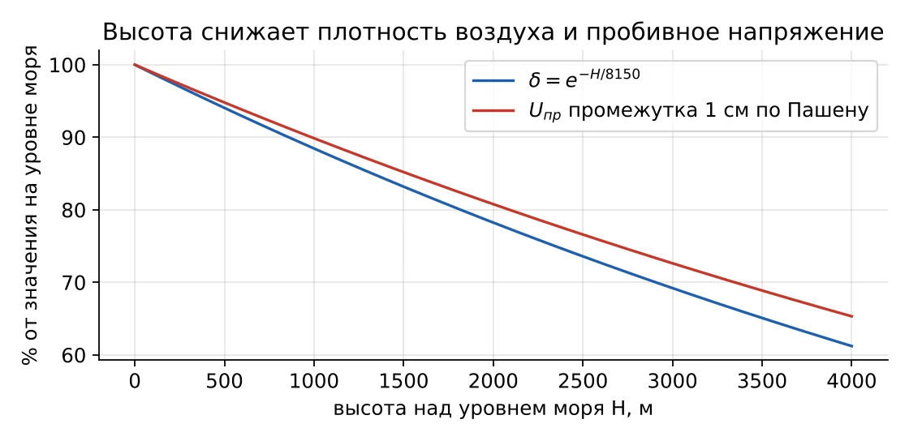
Рис. 19. Относительная плотность воздуха и пробивное напряжение промежутка 1 см в зависимости от высоты
11. Реальные случаи
Случаи 11.1–11.3 описаны в открытых источниках (ссылки в разделе 13), случай 11.4 — нормативная практика, 11.5 — обобщённые типовые ситуации для обсуждения без привязки к конкретному объекту.
11.1. Потеря ракеты из-за дуги при низком давлении (Rocket Lab, 2023)
| Что случилось | 19 сентября 2023 г. вторая ступень ракеты Electron потеряла питание примерно через 151 с полёта, спутник был потерян. Расследование установило дугу в высоковольтном источнике питания контроллеров двигателя: дуга замкнула батареи. По данным компании, совпали три условия: пульсации переменного напряжения поверх постоянного, следы гелия и азота в межступенчатом отсеке и трудно обнаружимый дефект изоляции жгута. |
| Физика | По мере подъёма давление падает, p·S уходит на левую ветвь кривой Пашена — к её минимуму, где пробой возможен при сотнях вольт. Примесь гелия и азота меняет константы A и B. Компания прямо ссылается на анализ по закону Пашена. |
| Урок | Отсек с высоковольтным оборудованием сделали герметичным с поддерживаемым давлением — уход с минимума Пашена; ужесточили наземные испытания с запасом по условиям. |
11.2. Элегазовый выключатель на морозе (Канада, 2022)
| Что случилось | 28 декабря 2022 г. на лесопильном комбинате (Армстронг, Британская Колумбия) отказала концевая муфта кабеля 25 кВ, возникла дуга. Выключатель 138 кВ с элегазом должен был отключить КЗ, но находился в блокировке из-за низкого давления газа: КЗ длилось около 165 с до отключения сетью, трансформатор повреждён. Номинал 87 psi (≈ 6 бар) при 20 °C, сигнал 76 psi, блокировка ниже 72 psi; после аварии — 50 psi. Сигнал о низком давлении поступил за 6 дней и не был отработан; температура доходила до −34 °C. |
| Физика | Прочность элегаза определяется его плотностью (p·S). Низкое давление — меньше молекул на пути, слабее прилипание; аппарат блокируют, чтобы он не отключал дугу при недостаточной прочности. Холод снижает давление и может вызвать сжижение SF₆. |
| Урок | Для Арктики — прямой урок: сигнализацию плотности элегаза нельзя игнорировать; блокировка защищает аппарат, но оставляет сеть без отключения — нужна резервная защита. |
11.3. Скрытая потеря вакуума в вакуумной камере
| Что случилось | Даже лучшие вакуумные камеры понемногу теряют вакуум. Изготовленные при 10−4–10−5 Па, они начинают не выдерживать испытание высоким напряжением при давлении около 10−1 Па и могут отказать внезапно; испытание высоким напряжением даёт лишь «годен/не годен». |
| Физика | При глубоком вакууме p·S далеко левее минимума Пашена — пробоя газа нет (зазор 8–12 мм держит сотни киловольт). Рост давления сдвигает рабочую точку к минимуму, прочность резко падает. Метод контроля MAC использует разряд Пеннинга в магнитном поле: ток ионизации пропорционален давлению — прямое применение ударной ионизации. |
| Урок | Состояние вакуума измеряют током ионизации; профилактические испытания ВДК — часть обслуживания КРУ 6–10 кВ на горных предприятиях. |
11.4. Поправка на высоту в координации изоляции
| Что случилось | Нормы МЭК 60071-2 требуют увеличивать испытательные напряжения внешней изоляции для подстанций выше 1000 м: плотность воздуха δ = e−H/8150, на 3000 м она ≈ 0,69. Испытания на высоте до 4300 м проводились в Китае при проектировании линий сверхвысокого напряжения. |
| Физика | Меньше плотность — длиннее пробег — меньше Uпр (правая ветвь Пашена, табл. 5). |
| Урок | Оборудование, рассчитанное «на уровень моря», в горах работает с уменьшенным запасом. |
12. Вопросы для самопроверки
Почему при 30 кВ/см воздух не пробивается, хотя ионизация возможна?
Что общего у фотоионизации и стримера?
Чем α отличается от γ?
Почему ионы лавины почти неподвижны?
Что будет, если η > α?
Как связаны условие самостоятельности и закон Пашена?
Почему у кривой Пашена есть минимум?
Зачем облучают шаровые разрядники?
Почему вакуум — хороший изолятор?
Чем опасно падение давления элегаза?
13. Источники
Важов В. Ф., Лавринович В. А. Техника высоких напряжений: учебник. — Томск: ТПУ, 2014. — Разд. 1.1.
Райзер Ю. П. Физика газового разряда. — М.: Наука (таблица констант A, B).
Rocket Lab. Update on anomaly review, Electron, 19.09.2023 — https://satnow.com/news/details/1289-rocket-lab-announces-next-electron-launch-window-and-provides-update-on-anomaly-review
Technical Safety BC. Incident investigation II-1487206-2022 (Armstrong, BC) — https://files.technicalsafetybc.ca (отчёт II-1487206-2022)
TestGuy Wiki. Magnetron Atmospheric Condition (MAC) Testing Principles — https://wiki.testguy.net/t/magnetron-atmospheric-condition-mac-testing-principles/71
Pigini A. Dielectric Strength & Air Density // INMR — https://www.inmr.com/dielectric-strength-air-density/
МЭК 60071-2. Координация изоляции. Ч. 2: Руководство по применению.